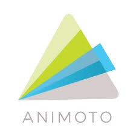

Animoto es una herramienta online que sirve para crear videos con un fin comercial, personal o educativo. Cuenta además con una aplicación para IOS y Android.
Es una herramienta muy fácil y sencilla de usar, por lo que, no es necesario tener conocimientos avanzados sobre la producción de videos.
Animoto tiene una versión gratuita, suficiente para craer videos educativos, para ello solo necesita registrarse con una cuenta de correo electrónico o de Facebook. La versión gratuita permite usar una gran variedad de herramientas y se pueden crear vídeos cortos de hasta 30 segundos, permite utilizar distinto material multimedia, como imágenes, audio o video como también emplear distintas animaciones para hacer más dinámico el video, también permite animar una presentación de Power Point cargándola en la plataforma.
La suscripción de pago es ideal para el ámbito profesional o ejecutivo, ya que cuenta con más opciones de edición y provee tutoriales para que puedas aprovechar al máximo todas las herramientas.
Animoto ofrece la versión gratuita para educadores. Este tipo de solicitudes pueden tomar varias semanas, además que deben de renovarse cada 6 meses.Esta cuenta te permitirá a ti y a 50 estudiantes utilizar la plataforma.
A continuación se muestra un videotutorial del uso de esta herramienta: